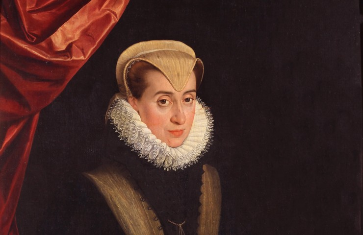

Originalmente la residencia era una quinta de veraneo de estilo italianizante. Fue construida en 1886 por el arquitecto Ernesto Bunge para sus suegros: Francisco Chas (hijo de Juana Belgrano, hermana del prócer argentino Manuel Belgrano) y Catalina Salas. Chas había ocupado, entre otros cargos públicos, el de senador por la provincia de Buenos Aires.
A la muerte de ambos la hija de ellos, Rosario Chas, vivió alguna temporada en ella. La propiedad fue adquirida en 1894 por Mercedes Castellanos de Anchorena, y al casarse su hija Josefina Anchorena con Enrique Larreta, en 1903, ésta la recibió como regalo de bodas.
La casa hasta entonces tenía solo unas habitaciones abiertas a una galería en la que unas columnas delgadas sostenían el alero. Los nuevos dueños decidieron realizar modificaciones, y solicitaron consejo al arquitecto Martín Noel. Siguiendo las ideas de éste, el arquitecto Cristhian Schindler la convirtió, en 1916, en un «palacio castellano», de estilo neocolonial. La razón de este cambio obedece a las ideas de la época: una reacción contra la arquitectura extranjera, que amenazaba terminar con los valores culturales propios. Martín Noel fue el pionero, en el arte de la arquitectura, de esta «restauración nacionalista».
Se incorporaron habitaciones en el primer piso, nuevas áreas de servicio posteriores y se cubrió el patio central. Fue así como la casa fue modificada para recrear los sentimientos y las inclinaciones estéticas del escritor, que se interesaba por el período renacentista español y barroco: casi todas las piezas expuestas son de temática religiosa.
En 1961, al fallecer Larreta, sus hijos vendieron la casa a la Municipalidad de la Ciudad de Buenos Aires, con la finalidad de dedicarla como museo, y donaron la colección de obras de arte y mobiliario. En octubre del año siguiente el Museo abrió oficialmente sus puertas, contando entonces con una mayoría de objetos de entre los siglos XV y XVIII que pertenecían al escritor, más otros adquiridos nuevos o recibidos como donación.
Entre quienes fueron sus ilustres huéspedes figuran, entre otros, el rey Leopoldo II de Bélgica, los príncipes imperiales de Japón y el exsecretario de Estado norteamericano y premio Nobel de la Paz Henry Kissinger.
